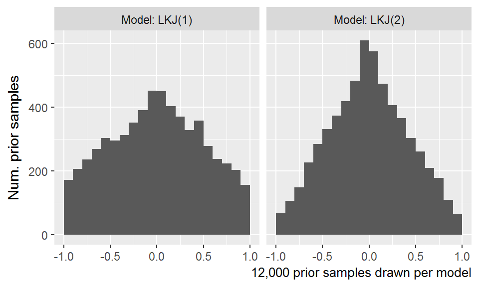
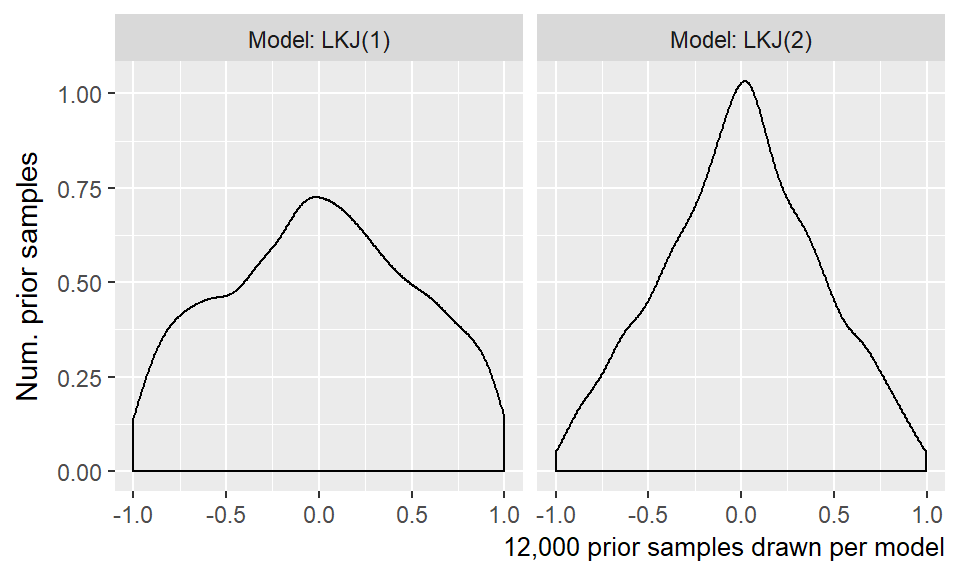

Chapter 10 Analysis of familiar word recognition
General Todos:
- Determine and use consistent terminology for the studies and growth curve features.
- Make sure axis labels and legend labels are consistent.
10.1 Growth curve analysis
TJM: I’ll have to clean this section up once the order of the main results is pinned down. That way this can flow neatly in to the findings.
Looks to the familiar image were analyzed using Bayesian mixed effects logistic regression. We used logistic regression because the outcome measurement is a probability (the log-odds of looking to the target image versus a distractor). We used mixed-effects models to estimate a separate growth curve for each child (to measure individual differences in word recognition) but also treat each child’s individual growth curve as a draw from a distribution of related curves.
We used Bayesian techniques to study a generative model of the data. Instead of reporting and describing a single, best-fitting model of some data, Bayesian methods consider an entire distribution of plausible models that are consistent with the data and any prior information we have about the models. By using this approach, one can explicitly quantify uncertainty about statistical effects and draw inferences using estimates of uncertainty (instead of using statistical significance—which is not a straightforward matter for mixed-effects models).6
The eyetracking growth curves were fit using an orthogonal cubic polynomial function of time (a now-conventional approach; see Mirman, 2014). Put differently, we modeled the probability of looking to the target during an eyetracking task as:
\[ \text{log-odds}(\mathit{looking}) = \beta_0 + \beta_1 * \textit{Time}^1 + \beta_2 * \textit{Time}^2 + \beta_3 * \textit{Time}^3 \]
That the time terms are orthogonal means that \(\textit{Time}^1\), \(\textit{Time}^2\) and \(\textit{Time}^3\) are transformed so that they are uncorrelated. Under this formulation, the parameters \(\beta_0\) and \(\beta_1\) have a direct interpretation in terms of lexical processing performance. The intercept, \(\beta_0\), measures the area under the growth curve—or the probability of fixating on the target word averaged over the whole window. We can think of \(\beta_0\) as a measure of word recognition reliability. The linear time parameter, \(\beta_1\), estimates the steepness of the growth curve—or how the probability of fixating changes from frame to frame. We can think of \(\beta_1\) as a measure of processing efficiency, because growth curves with stronger linear features exhibit steeper frame-by-frame increases in looking probability.7
We studied how word recognition changes over time by modeling how growth curves change over developmental time. This amounted to studying how the growth curve parameters changes year over year. We included dummy-coded indicators for Year 1, Year 2, and Year 3 and allowed these indicators interact with the growth curve parameters. These year-by-growth-curve terms captured how the shape of the growth curves changed each year. We also included random effects to represent child-by-year effects.
10.1.1 Growth curve features as measures of word recognition performance
As noted above, two of the model’s growth curve features have direct interpretations in terms of lexical processing performance: The model’s intercept parameter corresponds to the average proportion/probability of looking to the named image over the trial window and the linear time parameter corresponds to slope of the growth curve or lexical processing efficiency. We also were interested in peak proportion of looks to the target. We derived this value by computing the growth curves from the model and taking the median of the five highest points on the curve. Figure 10.1 shows three simulated growth curves and how each of these growth curve features relate to word recognition performance.

Figure 10.1: Illustration of the three growth curve features and how they describe lexical processing performance. The three curves used are simulations of new participants from Year 2.
10.1.2 Year over year changes in word recognition
TJM: This is a bit rough still.
As a mixed-effects model, the model estimated a population-average growth curve (the “fixed” effects) and how individual children deviated from average (the “random” effects). Figure TODO shows 200 posterior samples of those average growth curves for each study. Clearly, on average, the growth curves become steeper and achieve higher looking probabilities with each year of the study.

We now consider how the curvature of the average growth curves change each year. Figure 10.2 depicts uncertainty intervals with the model’s average effects of each timepoint on the growth curve features. The intercept and linear time effects increased each year, confirming that children become more reliable and faster at recognizing words as they grow older. The peak accuracy also increased each year. For each effect, the change from year 1 to year 2 is approximately the same as the change from year 2 to year 3, as visible in figure 10.3.

Figure 10.2: Uncertainty intervals for the effects of study timepoints on growth curve features. The intercept and peak features were converted from log-odds to proportions to ease interpretation.


Figure 10.3: Uncertainty intervals for the differences between study timepoints. Again, the intercept and peak features were converted to proportions.
The average looking probability (intercept feature) was 0.38 [90% UI: 0.37–0.40] for timepoint 1, 0.49 [0.47–0.50] for timepoint 2, and 0.56 [0.54–0.57] for timepoint 3. The averages increased by 0.10 [0.09–0.11] from timepoint 1 to timepoint 2 and by 0.07 [0.06–0.09] from timepoint 2 to timepoint 3. The peak looking probability was 0.55 [0.53–0.57] for timepoint 1, 0.68 [0.67–0.70] for timepoint 2, and 0.77 [0.76–0.78] for timepoint 3. The peak values increased by 0.13 [0.11–0.16] from timepoint 1 to timepoint 2 and by 0.09 [0.07–0.10] from timepoint 2 to timepoint 3. These results numerically confirm the hypothesis that children would improve in their word recognition reliability, both in terms of average looking and in terms of peak accuracy, each year.
Summary. The average growth curve features increased year over year, so that children looked to the target more quickly and more reliably.
- This result is as expected.
- It’s good that the task scaled with development so that there was room to grow each year.
- The growth curve changes each year involved peak accuaracy and steepness of the curve. They reach higher heights, and they hit year 1 peak earlier each year.
10.1.3 Exploring plausible ranges of performance over time
TJM: I like this analysis, but I’m realizing I should describe how variable the real participants are first.
Bayesian models are generative; they describe how the data could have been generated. Our model assumed that each child’s growth curve was drawn from a population of related growth curves, and it tried to infer the parameters over that distribution. These two features—a generative model and learning about the population of growth curves—allow the model to simulate new samples from that distribution of growth curves. That is, we can predict a set of growth curves for a hypothetical, unobserved child drawn from the same distribution as the 195 observed children. This procedure lets us explore the plausible degrees of variability in performance at each age.
Figure 10.4 shows the posterior predictions for 1,000 simulated participants, which demonstrates how the model expects new participants to improve longitudinally but also exhibit stable individual differences over time. Figure 10.5 shows uncertainty intervals for these simulations. The model learned to predict less accurate and more variable performance at age 3 with improving accuracy and narrowing variability at age 4 and age 5.

Figure 10.4: Posterior predictions for hypothetical unobserved participants. Each line represents the predicted performance for a new participant. The three dark lines highlight predictions from one single simulated participant. The simulated participant shows both longitudinal improvement in word recognition and similar relative performance compared to other simulations each year, indicating that the model would predict new children to improve year over year and show stable individual differences over time.

Figure 10.5: Uncertainty intervals for the simulated participants. Variability is widest at age 3 and narrowest at age 5, consistent with the prediction that children become less variable as they grow older.
We hypothesized that children would become less variable as they grew older and converged on a mature level of performance. We can address this question by inspecting the ranges of predictions for the simulated participants. The claim that children become less variable would imply that the range of predictions should be narrower age 5 than for age 4 than age 3. Figure 10.6 depicts the range of the predictions, both in terms of the 90 percentile range (i.e., the range of the middle 90% of the data) and in terms of the 50 percentile (interquartile) range. The ranges of performance decrease from age 3 to age 4 to age 5, consistent with the hypothesized reduction in variability.

Figure 10.6: Ranges of predictions for simulated participants over the course of a trial. The ranges are most similar during the first half of the trial when participants are at chance performance, and the ranges are most different at the end of the trial as children reliably fixate on the target image. The ranges of performance decreases with each year of the study as children show less variability.
The developmental pattern of increasing reliability and decreasing variability was also observed for the growth curve peaks. For the synthetic participants, the model predicted that individual peak probabilities will increase each year, peakTP1 = 0.55 [90% UI: 0.35–0.77], peakTP2 = 0.69 [0.48–0.86], peakTP3 = 0.78 [0.59–0.91]. Moreover, the range of plausible values for the individual peaks narrowed each for the simulated data. For instance, the difference between the 95th and 5th percentiles was 0.43 for timepoint 1, 0.38 for timepoint 2, and 0.32 for timepoint 3.
Summary. We used the model’s random effects estimates to simulate growth curves from 1,000 hypothetical, unobserved participants. The simulated dataset showed increasing looking probability and decreasing variability with each year of the study. These simulations confirm the hypothesis that variability would be diminish as children converge on a mature level of performance on this task.
- Word recognition performance is a skill where variation is greatest at younger ages.
- What mechanisms might come to bear on this? Does variability narrow developmentally for vocabulary?
- Children different in their word-learning trajectories, so the early differences in word recognition could be from younger children who are relatively early/late in word-learning. The SDs of the EVT scores narrows a small amount each year, even when we only consider the children who participated at all three years.
- (It will be easier to fold this in to the mechanism discussion once we have firmer results for the looks-to-foils analysis.)
- If differences in word recognition matter (and they do) and the differences are greatest at younger ages, then they are most informative at younger ages.
- Maybe a few words on why individual differences are worth studying?
10.1.4 Are individual differences stable over time?
TJM: This section is in really good shape.
We predicted that children would show stable individual differences such that children who are faster and more reliable at recognizing words at age 3 remain relatively faster and more reliable at age 5. To evaluate this hypothesis, we used Kendall’s W (the coefficient of correspondence or concordance). This nonparametric statistic measures the degree of agreement among J judges who are rating I items. For our purposes, the items are the 123 children who provided reliable eyetracking for all three years of the study. (That is, we excluded children who only had reliable eyetracking data for one or two years.) The judges are the sets of growth curve parameters from each year of study. For example, the intercept term provides three sets of ratings: The participants’ intercept terms from year 1 are one set of ratings and the terms from years 2 and 3 provide two more sets of ratings. These three ratings are the “judges” used to compute the intercept’s W. Thus, we compute five groups of W coefficients, one for each set of growth curve features: Intercept, Time1, Time2, Time3, and Peak looking probability.
Because we used a Bayesian model, we have a distribution of ratings and thus a distribution of concordance statistics. Each sample of the posterior distribution fits a growth curve for each child in each study, so each posterior sample provides a set of ratings for concordance coefficients. The distribution of W’s lets us quantify our uncertainty because we can compute W’s for each of the 4000 samples from the posterior distribution.
One final matter is how do we assess whether a concordance statistic is meaningful. To tackle this question, we also included a “null rater”, a fake parameter that assigned each child in each year a random number. We can use the distribution of W’s generated by randomly rating children as a benchmark for assessing whether the other concordance statistics differ meaningfully from chance.

Figure 10.7: Uncertainty intervals for the Kendall’s coefficient of concordance. Random ratings provide a baseline of null W statistics. The intercept and linear time features are decisively non-null, indicating a significant degree of correspondence in children’s relative word recognition reliability and efficiency over three years of study.
We used the kendall() function in the irr package (vers. 0.84, CITATION) to compute concordance statistics. Figure 10.7 depicts uncertainty intervals for the Kendall W’s for these growth curve features. The 90% uncertainty interval of W statistics from random ratings [0.28–0.39] subsumes the intervals for the Time2 effect [0.30–0.35] and the Time3 effect [0.28–0.35], indicating that these values do not differentiate children in a longitudinally stable way. That is, the Time2 and Time3 features differentiate children across studies as well as random numbers. Earlier, we stated that only the intercept, linear time, and peak features have psychologically meaningful interpretations and that the higher-order features of these models serve to capture the shape of the growth curve data. These statistics support that assertion.
Concordance is strongest for the peak feature, W = 0.59 [0.57–0.60] and the intercept term, W = 0.58 [0.57–0.60], followed by the linear time term, W = 0.50 [0.48–0.52]. Because these values are removed from the statistics for random ratings, we conclude that there is a credible degree of correspondence across studies when we rank children using their peak looking probability, average look probability (the intercept) or their growth curve slope (linear time).
Summary. Growth curve features reflect individual differences in word recognition reliability and efficiency. By using Kendall’s W to measure the degree of concordance among growth curve features over developmental time, we tested whether individual differences in lexical processing persisted over development. We found that the peak looking probability, average looking probability and linear time features were stable over time.
- Although the range of variability decreases, individual differences do not wash out.
- Lexical processing is a stable ability over the preschool years.
- Extrapolating outwards, the differences probably diminish to the point that they are not meaningful. But traces of those early differences can reappear years later on some test scores.
10.1.5 Predicting future vocabulary size
TJM: This section is in good shape.
We hypothesized that individual differences in word recognition at age 3 will be more discriminating and predictive future language outcomes than differences at age 4 or age 5. To test this hypothesis, we calculated the correlations of growth curve features with year 3 expressive vocabulary size and year 2 receptive vocabulary. (The receptive test was not administered during year 3 for logistical reasons). As with the concordance analysis, we computed each of the correlations for each sample of the posterior distribution to obtain a distribution of correlations.
Figure 10.8 shows the correlations of the peak looking probability, average looking probability and linear time features with expressive vocabulary size at year 3, and Figure 10.9 shows analagous correlations for the receptive vocabulary at year 2. For all cases, the strongest correlations were found between the growth curve features at year 1. Growth curve peaks from year 1 correlated with year 3 vocabulary with r = .52, 90% UI [.50–.54], but the concurrent peaks from year 3 showed a correlation of just r = .31, [.29–.33], a difference between year 1 and year 3 of rTP1−TP3 = .21, [.18–.24]. A similar pattern held for lexical processing efficiency values. Linear time features from year 1 correlated with year 3 vocabulary with r = .41, 90% UI [.39–.44], whereas the concurrent lexical processing values from year 3 only showed a correlation of r = .28, [.26–.31], a difference of rTP1−TP3 = .13, [.10–.16]. For the average looking probabilities, the correlation for year 1, r = .39, [.39–.44], was probably only slightly greater than the correlation for year 2, rTP1−TP2 = .02, [−.01–.04] but considerably greater than the concurrent correlation at year 3, rTP1−TP3 = .08, [.05–.10].

Figure 10.8: Uncertainty intervals for the correlations of growth curve features at each time point with expressive vocabulary (EVT2 standard scores) at year 3. The bottom rows provide intervals for the pairwise differences in correlations between time points.
Peak looking probabilities from year 1 were strongly correlated with year 2 receptive vocabulary, r = .62, [.61–.64], and this correlation was much greater than the correlation observed for the year 2 growth curve peaks, rTP1−TP2 = .26, [.26]. The correlation of year 1 average looking probabilities, r = .45, [.44–.47], was greater than the year 2 correlation, rTP1−TP2 = .08, [.08], and the correlation for year 1 linear time features, r = .51, [.49–.54], was likewise greater than the year 2 correlation, rTP1−TP2 = .22, [.19–.26].

Figure 10.9: Uncertainty intervals for the correlations of growth curve features at each time point with expressive vocabulary (PPVT4 standard scores) at year 2. The bottom row shows pairwise differences between the correlations at year 1 and year 2.
Summary. Although individual differences in word recognition are stable over time, early differences are more significant than later ones. The strongest predictors of future vocabulary size were the growth curve features from age 3. That is, word recognition performance from age 3 was more strongly correlated with age 5 expressive vocabulary than word recognition performance at age 5. A similar pattern of results held for predicting receptive vocabulary at age 4.
- This finding is surprising because vocabulary scores from the same week as the eyetracking data are less correlated than scores from two year earlier.
- This establishes that the differences are greatest and most predictive at younger ages.
10.1.6 Relationships with other child-level predictors
TJM: This is where I would analyze the other test scores as we have discussed.
10.2 Bayesian model results
Here is the code used to fit the model with Stan. It took about 24 hours to run the model. The regression terms have the prior Normal(0, 1)
library(rstanarm)
options(mc.cores = parallel::detectCores())
m <- stan_glmer(
cbind(Primary, Others) ~
(ot1 + ot2 + ot3) * Study +
(ot1 + ot2 + ot3 | ResearchID/Study),
family = binomial,
prior = normal(0, 1, autoscale = FALSE),
prior_intercept = normal(0, 2),
prior_covariance = decov(2, 1, 1),
data = d_m)
readr::write_rds(m, "./data/stan_aim1_cubic_model.rds.gz")The output below contains the model quick view, a summary of the fixed effect terms, and a summary of the priors used.
b
#> stan_glmer
#> family: binomial [logit]
#> formula: cbind(Primary, Others) ~ (ot1 + ot2 + ot3) * Study + (ot1 + ot2 +
#> ot3 | ResearchID/Study)
#> observations: 12584
#> ------
#> Median MAD_SD
#> (Intercept) -0.5 0.0
#> ot1 1.6 0.1
#> ot2 0.0 0.0
#> ot3 -0.2 0.0
#> StudyTimePoint2 0.4 0.0
#> StudyTimePoint3 0.7 0.0
#> ot1:StudyTimePoint2 0.6 0.1
#> ot1:StudyTimePoint3 1.1 0.1
#> ot2:StudyTimePoint2 -0.2 0.0
#> ot2:StudyTimePoint3 -0.4 0.1
#> ot3:StudyTimePoint2 -0.1 0.0
#> ot3:StudyTimePoint3 -0.2 0.0
#>
#> Error terms:
#> Groups Name Std.Dev. Corr
#> Study:ResearchID (Intercept) 0.305
#> ot1 0.691 0.20
#> ot2 0.437 -0.11 0.02
#> ot3 0.294 -0.11 -0.44 -0.06
#> ResearchID (Intercept) 0.264
#> ot1 0.423 0.78
#> ot2 0.125 -0.75 -0.56
#> ot3 0.058 -0.23 -0.31 0.19
#> Num. levels: Study:ResearchID 484, ResearchID 195
#>
#> Sample avg. posterior predictive distribution of y:
#> Median MAD_SD
#> mean_PPD 49.9 0.1
#>
#> ------
#> For info on the priors used see help('prior_summary.stanreg').
summary(b, pars = names(fixef(b)))
#>
#> Model Info:
#>
#> function: stan_glmer
#> family: binomial [logit]
#> formula: cbind(Primary, Others) ~ (ot1 + ot2 + ot3) * Study + (ot1 + ot2 +
#> ot3 | ResearchID/Study)
#> algorithm: sampling
#> priors: see help('prior_summary')
#> sample: 4000 (posterior sample size)
#> observations: 12584
#> groups: Study:ResearchID (484), ResearchID (195)
#>
#> Estimates:
#> mean sd 2.5% 25% 50% 75% 97.5%
#> (Intercept) -0.5 0.0 -0.5 -0.5 -0.5 -0.4 -0.4
#> ot1 1.6 0.1 1.4 1.5 1.6 1.6 1.7
#> ot2 0.0 0.0 0.0 0.0 0.0 0.1 0.1
#> ot3 -0.2 0.0 -0.2 -0.2 -0.2 -0.2 -0.1
#> StudyTimePoint2 0.4 0.0 0.3 0.4 0.4 0.4 0.5
#> StudyTimePoint3 0.7 0.0 0.6 0.7 0.7 0.7 0.8
#> ot1:StudyTimePoint2 0.6 0.1 0.4 0.5 0.6 0.6 0.7
#> ot1:StudyTimePoint3 1.1 0.1 0.9 1.0 1.1 1.2 1.3
#> ot2:StudyTimePoint2 -0.2 0.1 -0.3 -0.2 -0.2 -0.1 -0.1
#> ot2:StudyTimePoint3 -0.4 0.1 -0.5 -0.4 -0.4 -0.3 -0.3
#> ot3:StudyTimePoint2 -0.1 0.0 -0.2 -0.1 -0.1 -0.1 0.0
#> ot3:StudyTimePoint3 -0.2 0.0 -0.3 -0.2 -0.2 -0.2 -0.1
#>
#> Diagnostics:
#> mcse Rhat n_eff
#> (Intercept) 0.0 1.0 1086
#> ot1 0.0 1.0 857
#> ot2 0.0 1.0 842
#> ot3 0.0 1.0 1156
#> StudyTimePoint2 0.0 1.0 1034
#> StudyTimePoint3 0.0 1.0 959
#> ot1:StudyTimePoint2 0.0 1.0 674
#> ot1:StudyTimePoint3 0.0 1.0 934
#> ot2:StudyTimePoint2 0.0 1.0 836
#> ot2:StudyTimePoint3 0.0 1.0 762
#> ot3:StudyTimePoint2 0.0 1.0 1183
#> ot3:StudyTimePoint3 0.0 1.0 1390
#>
#> For each parameter, mcse is Monte Carlo standard error, n_eff is a crude measure of effective sample size, and Rhat is the potential scale reduction factor on split chains (at convergence Rhat=1).
prior_summary(b)
#> Priors for model 'b'
#> ------
#> Intercept (after predictors centered)
#> ~ normal(location = 0, scale = 5)
#>
#> Coefficients
#> ~ normal(location = [0,0,0,...], scale = [1,1,1,...])
#> **adjusted scale = [3.33,3.33,3.33,...]
#>
#> Covariance
#> ~ decov(reg. = 2, conc. = 1, shape = 1, scale = 1)
#> ------
#> See help('prior_summary.stanreg') for more detailsLet’s try to understand our model by making some plots.
10.2.1 Plot the intervals for the random effect parameters
These are the parameters governing the random effect distributions. First, we plot the standard deviations. Recall that in our hierarchical model we suppose that each growth curve is drawn from a population of related curves. The model’s fixed effects estimate the means of the distribution. These terms estimate the variability around that mean. We did not have any a priori hypotheses about the values of these scales, so do not discuss them any further.

Then the correlations.

10.2.2 Posterior predictive checks
Bayesian models are generative; they describe how the data could have been generated. One way to evaluate the model is to have it simulate new observations. If the simulated data closely resembles the observed data, then we have some confidence that our model has learned an approximation of how the data could have been generated. Figure 10.10 depicts the density of the observed data from each year of the study versus 200 posterior simulations. Because the simulations closely track the density of the observed data, we can infer that the model has learned how to generate data from each year of the study.
![Posterior predictive density for the observed data from each year of the study. The x-axis represents the outcome measure—the proportion of looks to the target image—and the y-axis is the density of those values at year. At age 3, there is a large density of looks around chance performance (.25) with a rightward skew (above-chance looks are common). At age 4 and age 5, a bimodal distribution emerges, reflecting how looks start at chance and reliably increase to above-chance performance. Each light line is a simulation of the observed data from the model, and the thick lines are the observed data. Because the thick line is surrounded by light lines, we visually infer that the the model faithfully approximates the observed data.](12-aim1-notebook_files/figure-html/post-pred-1.png)
Figure 10.10: Posterior predictive density for the observed data from each year of the study. The x-axis represents the outcome measure—the proportion of looks to the target image—and the y-axis is the density of those values at year. At age 3, there is a large density of looks around chance performance (.25) with a rightward skew (above-chance looks are common). At age 4 and age 5, a bimodal distribution emerges, reflecting how looks start at chance and reliably increase to above-chance performance. Each light line is a simulation of the observed data from the model, and the thick lines are the observed data. Because the thick line is surrounded by light lines, we visually infer that the the model faithfully approximates the observed data.
We can ask the model make even more specific posterior predictions. Below we plot the posterior predictions for random participants. This is the model simulating new data for these participants.
set.seed(09272017)
ppred <- d_m %>%
sample_n_of(8, ResearchID) %>%
tristan::augment_posterior_predict(b, newdata = ., nsamples = 100) %>%
mutate(trials = Primary + Others)
ggplot(ppred) +
aes(x = Time, y = Prop, color = Study, group = Study) +
geom_line(aes(y = .posterior_value / trials,
group = interaction(.draw, Study)),
alpha = .20) +
geom_line(size = 1, color = "grey50") +
facet_wrap("ResearchID") +
theme(
legend.position = c(.95, 0),
legend.justification = c(1, 0),
legend.margin = margin(0)) +
guides(color = guide_legend(title = NULL, override.aes = list(alpha = 1))) +
labs(
title = "Observed means and 100 simulations of new data",
x = "Time after target onset [ms]",
y = "Proportion looks to target") 
Or we can plot the linear predictions. These are posterior predictions of the log-odds of looking to target before adding binomial noise.
lpred <- d_m %>%
sample_n_of(8, ResearchID) %>%
tristan::augment_posterior_linpred(b, newdata = ., nsamples = 100)
ggplot(lpred) +
aes(x = Time, y = .posterior_value, color = Study) +
geom_line(aes(group = interaction(Study, ResearchID, .draw)),
alpha = .1) +
facet_wrap("ResearchID") +
geom_point(aes(y = qlogis(Prop)), shape = 1) +
theme(
legend.position = c(.95, 0),
legend.justification = c(1, 0),
legend.margin = margin(0)) +
guides(color = guide_legend(title = NULL, override.aes = list(alpha = 1))) +
labs(
title = "Observed data and 100 posterior predictions",
x = "Time after target onset [ms]",
y = "Posterior log-odds")
10.2.3 Formal model specification
TJM: Ignore this section for now. It might go to an appendix. Basically, I think I need to briefly summarize and justify the priors used in the analysis.
We used moderately informative priors for the main regression effects.
- b ~ Normal(mean = 0, sd = 1)
When we computed the orthogonal polynomial features for Time, they were rescaled so that the linear feature ranged from −.5 to .5. Under this scaling a unit change in Time1 was equal to change from the start to the end of the analysis window. The polynomial features for the Time had the following ranges:
d_m %>%
distinct(ot1, ot2, ot3) %>%
tidyr::gather("Feature", "Value") %>%
group_by(Feature) %>%
summarise(Min = min(Value), Max = max(Value), Range = Max - Min) %>%
mutate_if(is.numeric, round, 2) %>%
mutate(Feature = stringr::str_replace(Feature, "ot(\\d)", "Time^\\1^")) %>%
knitr::kable()| Feature | Min | Max | Range |
|---|---|---|---|
| Time1 | -0.50 | 0.50 | 1.00 |
| Time2 | -0.33 | 0.60 | 0.93 |
| Time3 | -0.63 | 0.63 | 1.26 |
Under the Normal(0, 1) prior, before seeing any data, we expect 95% of plausible effects to fall in the range ±1.96, which is an adequate range for these growth curve models. For example, consider just the effect of Time1. If a listener starts at chance performance, 25% or -1.1 logits, and increases to, say, 65% or 0.62, the effect of a unit change in Time1 would be a change of 1.72 logits. This magnitude of effect is accommodated by our Normal(0, 1) prior.
_Here I would have to also describe the random effects structure.
For the hierarchical part of the model, I used RstanARM’s decov() prior which simultaneously sets a prior of the variances and correlations of the model’s random effect terms. For these terms, I used the default prior for the variance terms and used a weakly informative LKJ(2) prior on the random effect correlations. Under LKJ(1) supports all correlations in the range ±1, but under LKJ(2) extreme correlations are less plausible. In the figure below, we see that the LKJ(2) prior nudges some of the probability mass away from ±1 towards the center. The motivation for this kind of prior was regularization: We give the model a small amount of information to nudge it away from extreme, degenerate values.

References
Mirman, D. (2014). Growth curve analysis and visualization using R. Boca Raton, FL: Chapman & Hall/CRC.
It is tempting to further justify this approach by comparing Bayesian versus classical/frequentist statistics, but my goals in using this method are simple: To estimate statistical effects and quantify uncertainty about those effects. This pragmatic brand of Bayesian statistics is illustrated in texts by Gelman and Hill (2007) and McElreath (2016).↩
The polynomial other terms are less important—or rather, they have do not map as neatly onto behavioral descriptions as the accuracy and efficiency parameters. The primary purpose of quadratic and cubic terms is to ensure that the estimated growth curve adequately fits the data. In this kind of data, there is a steady baseline at chance probability before the child hears the word, followed a window of increasing probability of fixating on the target as the child recognizes the word, followed by a period of plateauing and then diminishing looks to target. The cubic polynomial allows the growth curve to be fit with two inflection points: the point when the looks to target start to increase from baseline and the point when the looks to target stops increasing.↩